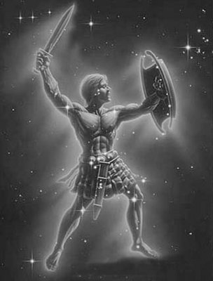

Dillere destan çapkınlığı yüzünden gene karısı tanrıça Hera'yla kavga etti Baştanrı Zeus... Öfkesini yatıştırmak için de oğlu tanrı Hermes'i ve kardeşi deniz tanrısı Poseydon'u (Poseidon) yanına alıp Olimpos tanrılar ülkesinden ayrıldı. Hep birlikte Trakya bölgesinde bir kır gezisine çıktılar...
Yolları üstünde karşılaştıkları İryos (İrios) adlı bir çoban, sürüleriyle yalnız başına oturduğu dağ evine buyur etti insan kılığındaki bu tanrıları; neyi var neyi yoksa önlerine koydu hemen... İryos'un bu içten konukseverliği karşısında çok duygulanan tanrılar, bir şey dilemesini istediler ondan. Çoban, hiçbir dileği olmadığını söylediyse de konuk tanrılar çok ısrarcı oldular. Bunun üzerine; "Öyleyse bir dilekte bulunacağım, ama gülmeyeceksiniz..." diye başladı İryos. "Yoksulluk yüzünden şimdilik evlenemiyorum. Ama gene de bir çocuğum olsun istiyorum!.."
Bunun üzerine tüccar kılığındaki Baştanrı Zeus, hemen bir düve kurban etmesini ve derisini getirmesini istedi çoban İryos'tan... Ve bir süre sonra çobanın getirdiği derinin üstüne tek parmağıyla bir delikanlı deseni çizdi. Ve bu deriyi toprağa gömmesini, orada dokuz ay bekletmesini söyledi çobana...
İryos, dokuz ay sonra topraktan çıkardığı derinin arasında nurtopu gibi bir oğlan çocuğu buldu. Sevinçten havalara uçtu haliyle. Koyun-keçi sütüyle beslediği ve Oryon (Orion) adını verdiği bebek, tez büyüyüp serpildi. Artık yeni yetmelik çağına ulaşınca da denizlerin dalgaları üstünde, dağda bayırda, her yerde gönlünce yürüyüp koşmaya, rahatça avlanmaya başladı. Üstelik bu boylu boslu, yakışıklı Oryon'u görüp de gönlünü kaptırmayan kadın-kız yok gibiydi!..
Bir ara kral Minopyon'un (Minopion) kızı Merope'ye vuruldu Oryon. Merope de zaten Oryon'a vurgundu... Gelenek olduğu üzere Oryon kızı babasından istetti. Ama bir çoban çocuğunu damat olarak benimsemek hangi kralın onuruna yaraşırdı ki? Kral, damat adayının dileğine gülüp geçti!.. Ne var ki birbirlerine deli divane vurulan Merope'yle Oryon, bir yolunu bulup kaçtılar... Haliyle kral, isyancı Oryon'u yakalatmak için adamlarını seferber etti... Bir sonuç alamayınca başka yollara başvurduysa da ne kızının, ne de Oryon'un izini buldurabildi! Artık onunla başa çıkamayacağını anlayan kral Minopyon, armağanlara boğup gönlünü ettiği bir Satiros'a Oryon'un gözlerini kör ettirdi! Kızını da onun aracılığıyla sarayına getirtti. Artık gözlerini ve sevgilisini yitiren umarsız Oryon da, ülke ülke dolaşmaya başladı. Bir gün Lemnos adasında demirci topal tanrı Hefaystos'la (Hephaistos) karşılaştı. Ona başından geçenleri bir bir anlattı. Delikanlının serüvenlerinden çok etkilenen demircilerin ve ateşin tanrısı Hefaystos; bir yardımcı verdi kör Oryon'un buyruğuna. Ve bu yardımcıya, Oryon'u sürekli doğuya, güneş tanrısının oturduğu yerlere doğru götürmesini söyledi...
Oryon'la yardımcısı, nice serüvenlerden sonra güneş tanrısı Helyos'u buldular. Tanrı Helyos, bir gencin sırtında taşıdığı iyi yürekli Oryon'a acıdı; görmeyen gözlerini özel ışınlarıyla iyileştirdi. Gözleri açılır açılmaz da karısını bulmak ve kraldan öcünü almak üzere Şiyos'a (Chios) döndü Oryon. Ne var ki kral da damadının geri döndüğünü duyar duymaz bir mağaraya saklandı. Bütün aramalarına karşın karısını da kralı da bulamayan Oryon, umarsız yeniden yollara düştü...
Bir gün Girit adasında dolaşırken av ve ay tanrıçası Artemis'le tanıştı. Yakışıklı ve sevimli Oryon'a günden güne daha çok ısınmaya başlayan tanrıça, onunla birlikte sık sık ava çıkmaya başladı... Bu birlikteliğin sonunda Artemis; iyi yürekli Oryon'un ışığa ve doğaya olan sevgisiyle daha derinden bütünleşmeye ve bu dünyayı, tanrıların ülkesi Olimpos'tan daha fazla sevmeye başladı. Ne var ki Artemis'in erkek kardeşi tanrı Apollon da, kız kardeşinin bir ölümlüye bu denli deli divane tutulmasına çok öfkelendi. Kız kardeşine bağırdı çağırdı... O ölümlü delikanlıdan hemen ayrılmasını söyledi... Ama tanrıça Artemis de, canı kimi isterse onu sevmekte özgür olduğu yanıtını veri.
Artık kız kardeşini sözle yola getiremeyeceğini anlayan tanrı Apollon bir gece, solgun ay ışıklarıyla zar zor aydınlanan Girit adasına geldi; orada kız kardeşi tanrıça Artemis'le buluştu. Sağdan soldan konuşa konuşa, birlikte dolaşmaya başladılar deniz kıyısında. Bir ara avcılık konusu açıldı. Ok kullanmada çok ünlü olan tanrıça Artemis; "Benimle kimsenin avcılık konusunda yarışamayacağını kabul etmelisin!" dedi kardeşi tanrı Apollon'a...

Oryon
Bunun üzerine tanrı Apollon; ta ötelerde, denizin üstünde duran yuvarlak bir gölge gösterdi kız kardeşine. Ay ışığında kımıldayan bu hedefi tek okla vurup vuramayacağını sordu. Artemis yanıt vermeye bile gerek duymadan, iyice gerdiği yayına yerleştirdiği oku, sözkonusu hedefe saldı hemen! O anda da sahilde uyuklayan Oryon'un köpeği acı acı havlamaya başladı!.. İki kardeş tanrı, vurulan şeyin ne olduğunu birlikte görmeye gittiler. Tanrıça Artemis denizin üstünde yüzen kanlı başı görünce dehşetten donakaldı! Vurduğu hedef, ayışığında yüzen can sevgilisi Oryon'du! Tanrıça o kadar üzüldü ki, kendini bu duruma düşüren kardeşi tanrı Apollon'la çok uzun süre konuşmadı... Ve Artemis, okuyla öldürdüğü sevgilisini kendisinden ayırmaması için babası Baştanrı Zeus'a yalvar yakar oldu...
Ve sonunda Zeus; kendisinin de çok sevdiği Oryon'u ve onun köpeğini; gökyüzünde tanrıça Artemis'in yakınlarında dolaşan bir yıldız takımına dönüştürdü...